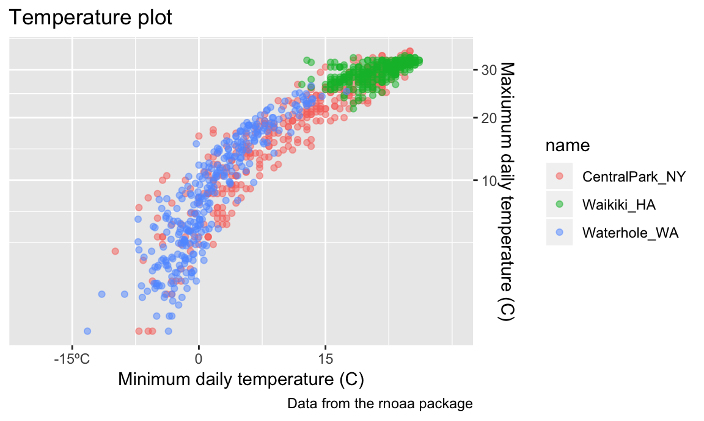
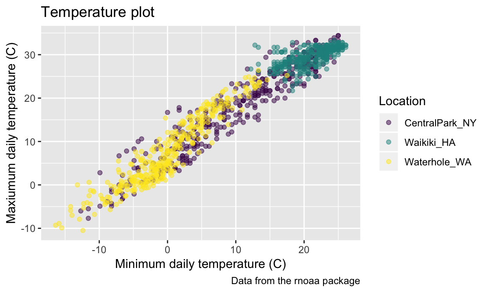
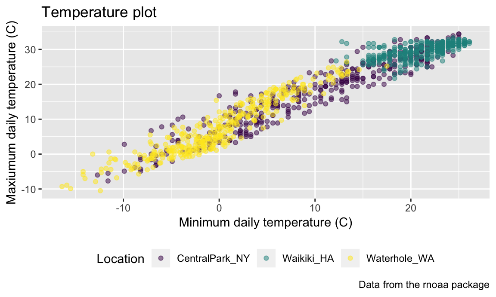
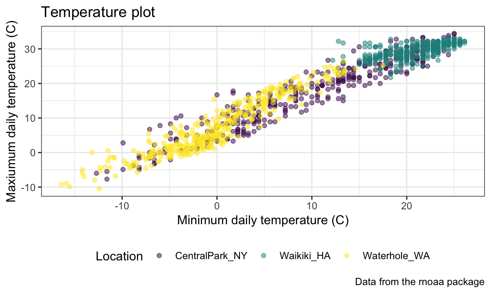

ggplot2Good visualization is a critical step in data analysis.
This is the second module in the Visualization and EDA topic; the relevant slack channel is here. Note that the slides and Other Materials / Extra Reading is the same as in Visualization Pt 1.
## ── Attaching packages ──────────────────────────────────────────────────────────────── tidyverse 1.2.1 ──## ✔ ggplot2 3.0.0 ✔ purrr 0.2.5
## ✔ tibble 1.4.2 ✔ dplyr 0.7.6
## ✔ tidyr 0.8.1 ✔ stringr 1.3.1
## ✔ readr 1.1.1 ✔ forcats 0.3.0## ── Conflicts ─────────────────────────────────────────────────────────────────── tidyverse_conflicts() ──
## ✖ dplyr::filter() masks stats::filter()
## ✖ dplyr::lag() masks stats::lag()Although I could add to the same .Rmd I started in Visualization Pt 1, I’ll create a new document for today. We’re also going to take advantage of features in additional packages; most of these were installed previously, but you might need to install some others using the code below:
devtools::install_github("patchwork")
devtools::install_github("gganimate")library(tidyverse)
library(ggridges)
##
## Attaching package: 'ggridges'
## The following object is masked from 'package:ggplot2':
##
## scale_discrete_manual
library(ggthemes)
library(patchwork)
# library(gganimate)We’ll still work with NOAA weather data, which is loaded using the same code as in Visualization Pt 1.
library(rnoaa)
weather_df =
rnoaa::meteo_pull_monitors(c("USW00094728", "USC00519397", "USS0023B17S"),
var = c("PRCP", "TMIN", "TMAX"),
date_min = "2017-01-01",
date_max = "2017-12-31") %>%
mutate(
name = recode(id, USW00094728 = "CentralPark_NY",
USC00519397 = "Waikiki_HA",
USS0023B17S = "Waterhole_WA"),
tmin = tmin / 10,
tmax = tmax / 10) %>%
select(name, id, everything())
weather_df
## # A tibble: 1,095 x 6
## name id date prcp tmax tmin
## <chr> <chr> <date> <dbl> <dbl> <dbl>
## 1 CentralPark_NY USW00094728 2017-01-01 0 8.9 4.4
## 2 CentralPark_NY USW00094728 2017-01-02 53 5 2.8
## 3 CentralPark_NY USW00094728 2017-01-03 147 6.1 3.9
## 4 CentralPark_NY USW00094728 2017-01-04 0 11.1 1.1
## 5 CentralPark_NY USW00094728 2017-01-05 0 1.1 -2.7
## 6 CentralPark_NY USW00094728 2017-01-06 13 0.6 -3.8
## 7 CentralPark_NY USW00094728 2017-01-07 81 -3.2 -6.6
## 8 CentralPark_NY USW00094728 2017-01-08 0 -3.8 -8.8
## 9 CentralPark_NY USW00094728 2017-01-09 0 -4.9 -9.9
## 10 CentralPark_NY USW00094728 2017-01-10 0 7.8 -6
## # ... with 1,085 more rowsStart with basic scatterplot:
ggplot(weather_df, aes(x = tmin, y = tmax)) +
geom_point(aes(color = name), alpha = .5)
## Warning: Removed 15 rows containing missing values (geom_point).There are a variety of useful ways to change the appearance of your plot, especially if your graphic is intended to be viewed by others. Some of the most important are the axis labels, title, and caption, all of which can be controlled using labs().
ggplot(weather_df, aes(x = tmin, y = tmax)) +
geom_point(aes(color = name), alpha = .5) +
labs(
title = "Temperature plot",
x = "Minimum daily temperature (C)",
y = "Maxiumum daily temperature (C)",
caption = "Data from the rnoaa package"
)
## Warning: Removed 15 rows containing missing values (geom_point).Another that I frequently change is the legend position; by default this is on the right of the graphic, but I often shift it to the bottom to ensure the graphic takes up the available left-to-right space.
ggplot(weather_df, aes(x = tmin, y = tmax)) +
geom_point(aes(color = name), alpha = .5) +
labs(
title = "Temperature plot",
x = "Minimum daily temperature (C)",
y = "Maxiumum daily temperature (C)",
caption = "Data from the rnoaa package"
) +
theme(legend.position = "bottom")
## Warning: Removed 15 rows containing missing values (geom_point).While we’re on the subject, you can change the default theme (which is theme_gray) to something else. Here’s theme_bw():
ggplot(weather_df, aes(x = tmin, y = tmax)) +
geom_point(aes(color = name), alpha = .5) +
labs(
title = "Temperature plot",
x = "Minimum daily temperature (C)",
y = "Maxiumum daily temperature (C)",
caption = "Data from the rnoaa package"
) +
theme_bw() +
theme(legend.position = "bottom")
## Warning: Removed 15 rows containing missing values (geom_point).
… and here’s theme_classic():
ggplot(weather_df, aes(x = tmin, y = tmax)) +
geom_point(aes(color = name), alpha = .5) +
labs(
title = "Temperature plot",
x = "Minimum daily temperature (C)",
y = "Maxiumum daily temperature (C)",
caption = "Data from the rnoaa package"
) +
theme_classic() +
theme(legend.position = "bottom")
## Warning: Removed 15 rows containing missing values (geom_point).… and, for some reason, here’s the Excel 2003 theme from ggthemes:
ggplot(weather_df, aes(x = tmin, y = tmax)) +
geom_point(aes(color = name), alpha = .5) +
labs(
title = "Temperature plot",
x = "Minimum daily temperature (C)",
y = "Maxiumum daily temperature (C)",
caption = "Data from the rnoaa package"
) +
ggthemes::theme_excel() +
theme(legend.position = "bottom")
## Warning: Removed 15 rows containing missing values (geom_point).
Don’t use the Excel 2003 theme (the first two are fine, and ggthemes has other very nice themes as well).
The behavior of your plot depends on the data you’ve supplied; in some cases, it’s easier to control behavior through data manipulation than it is through the plot code. This is particularly true for the order of categorical or factor variables. Categorical variables will be ordered alphabetically; factors will be follow the specified order level. You can change the order level of a factor variable to your specified preference using forcats::fct_relevel or according to the value of another variable using forcats::fct_reorder.
weather_df %>%
mutate(name = forcats::fct_relevel(name, c("Waikiki_HA", "CentralPark_NY", "Waterhole_WA"))) %>%
ggplot(aes(x = name, y = tmax)) +
geom_violin(aes(fill = name), color = "blue", alpha = .5) +
stat_summary(fun.y = median, geom = "point", color = "blue", size = 4) +
theme(legend.position = "bottom")
## Warning: Removed 3 rows containing non-finite values (stat_ydensity).
## Warning: Removed 3 rows containing non-finite values (stat_summary).
weather_df %>%
mutate(name = forcats::fct_reorder(name, tmax)) %>%
ggplot(aes(x = name, y = tmax)) +
geom_violin(aes(fill = name), color = "blue", alpha = .5) +
stat_summary(fun.y = median, geom = "point", color = "blue", size = 4) +
theme(legend.position = "bottom")
## Warning: Removed 3 rows containing non-finite values (stat_ydensity).
## Warning: Removed 3 rows containing non-finite values (stat_summary).
We’ll learn more about the forcats package in Data Wrangling II.
Learning Assessment: Revisit to density plot you made comparing precipitation across locations. Use themes and labels to improve the readability of this plot.
geom data argumentsplit weather into two
Note: i never remember any of this, and just google it repeatedly
Scales
Tick marks
Legend location
“Final” global options I set
Rotating axis text
patchworktmax vs tmin + precip ridge
PULSE data
Oh man is there a lot of stuff about visualization …
ggplotggplot
The code that I produced working examples in lecture is here.